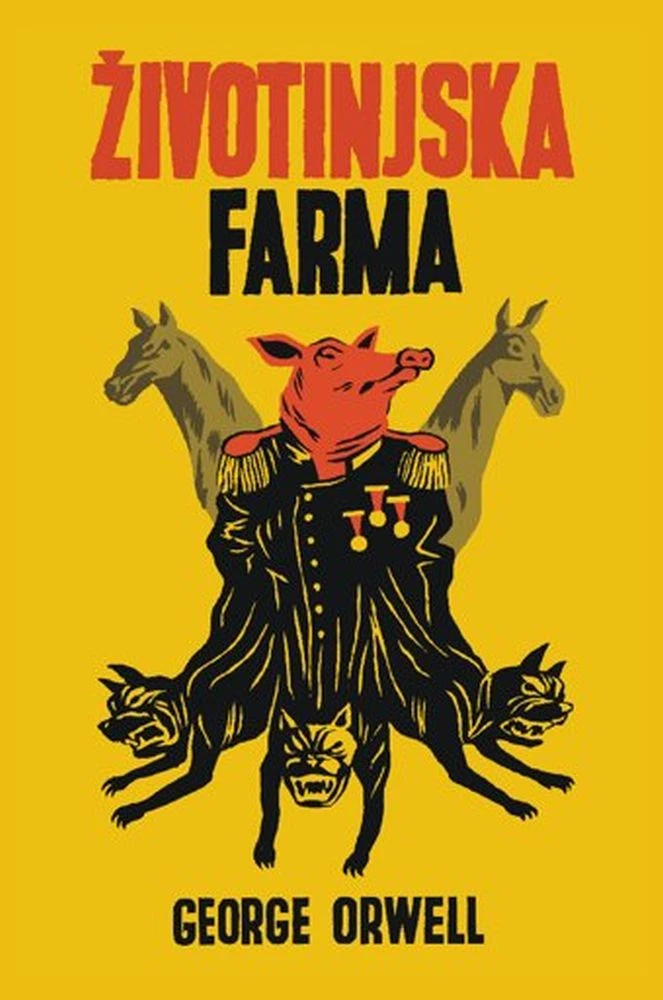
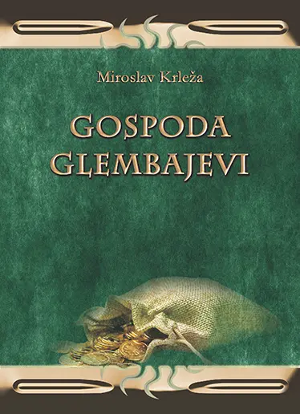
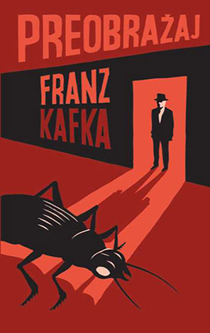
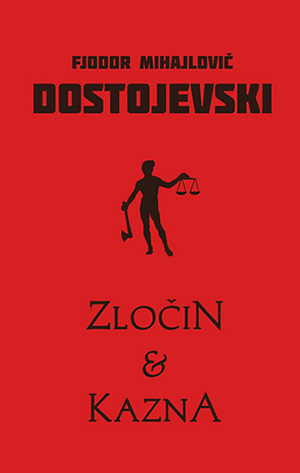

Na ovaj svijet gledam na poseban način i primjećujem mnoge male stvari koje me vesele i usrećuju. Najviše mi znače iskreni ljudi, njihova podrška i razumijevanje. Kad sam okružen onime što volim, osjećam se sretno, mirno i zadovoljno.
Ovi citati govore nešto o meni, o tome kako razmišljam i što mi je važno.



